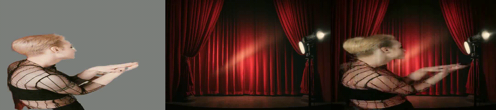
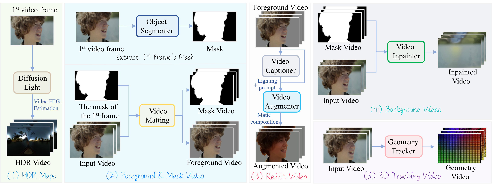
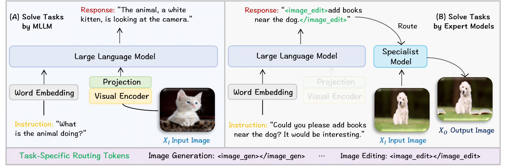
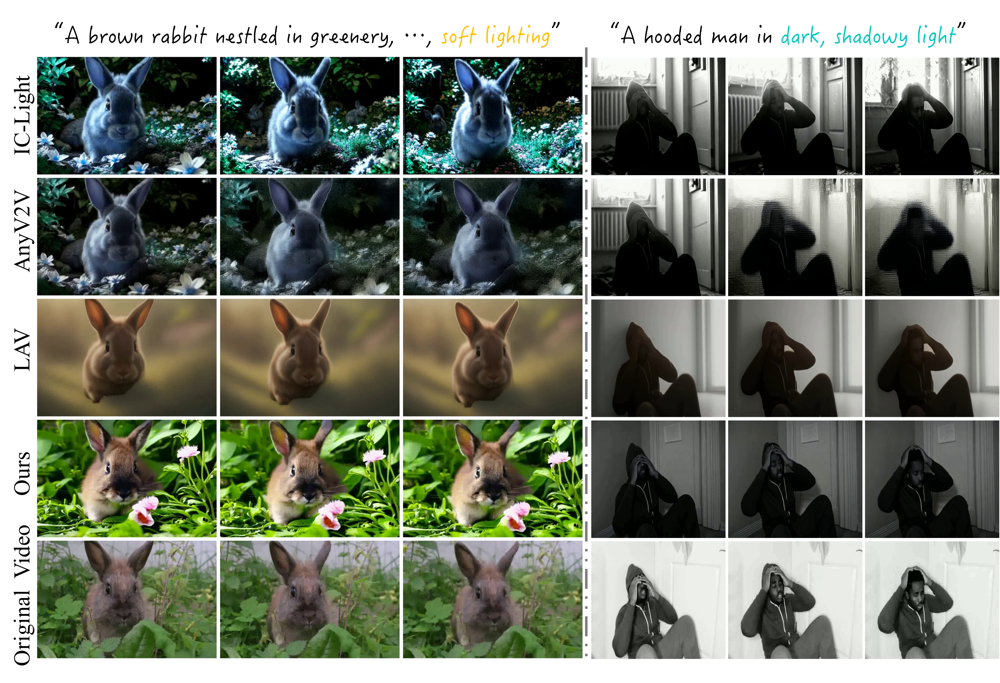
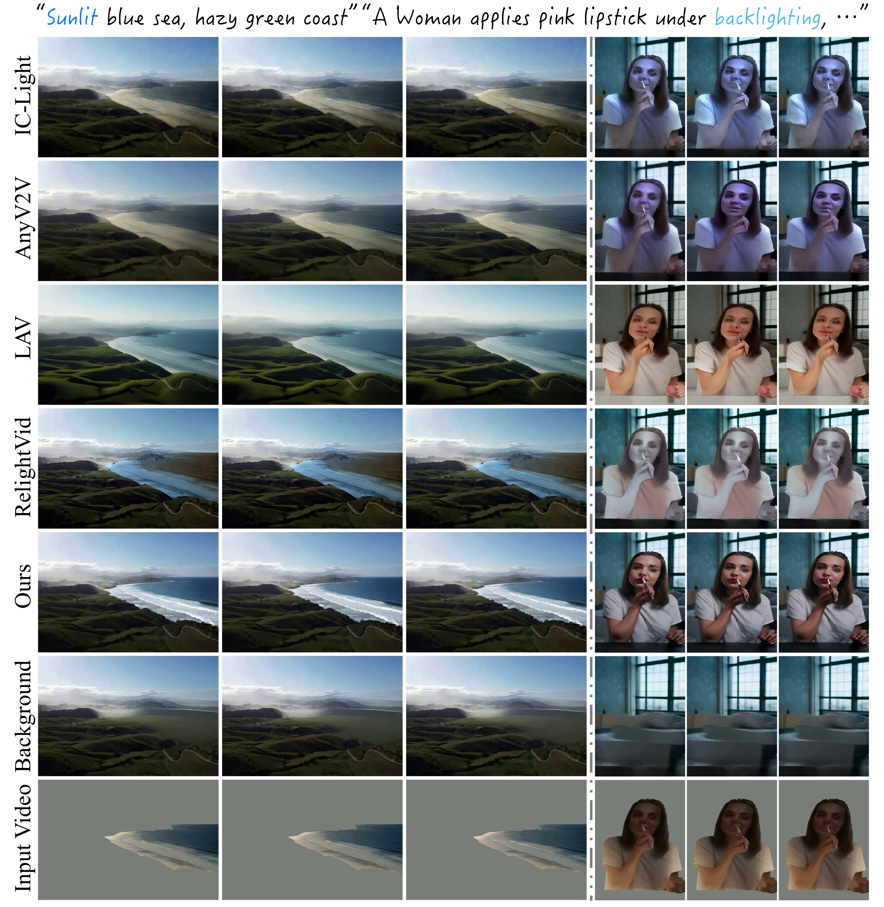
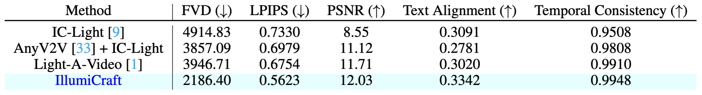
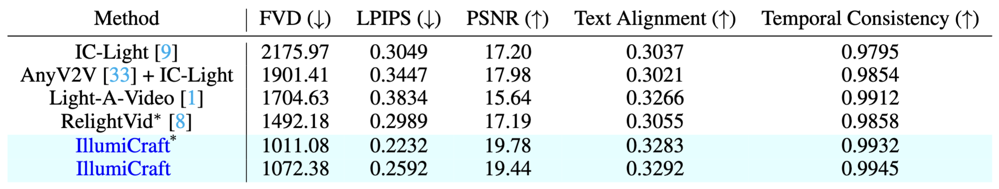

IllumiCraft takes a prompt and an input video, then adjusts the scene’s lighting based on a static background image. It supports different lighting setups, including spotlight effects.

IllumiCraft takes a prompt and an input video, then adjusts the scene’s lighting based on a static background image. It supports different lighting setups, including spotlight effects.

Although diffusion-based models can generate high-quality and high-resolution video sequences from textual or image inputs, they lack explicit integration of geometric cues when controlling scene lighting and visual appearance across frames. To address this limitation, we propose IllumiCraft, an end-to-end diffusion framework accepting three complementary inputs: (1) high-dynamic-range (HDR) video maps for detailed lighting control; (2) synthetically relit frames with randomized illumination changes (optionally paired with a static background reference image) to provide appearance cues; and (3) 3D point tracks that capture precise 3D geometry information. By integrating the lighting, appearance, and geometry cues within a unified diffusion architecture, IllumiCraft generates temporally coherent videos aligned with user-defined prompts. It supports background-conditioned and text-conditioned video relighting and provides better fidelity than existing controllable video generation methods.

Data Collection Mechanism of IllumiPipe. For each input video, our proposed IllumiPipe extracts various types of data: (1) HDR maps, (2) foreground video and mask video, (3) relit video, (4) background video, and (5) 3D tracking video.

IllumiCraft Framework. It uses HDR maps, relit foreground video, 3D tracking, and an optional background image, it models illumination, appearance, and geometry, then generates videos from an illumination-aware text prompt. The figure shows 3 illumination tokens; HDR maps, background images, and 3D tracking videos are all optional during training.

Visual results under the text-conditioned setting.

Visual results under the background-conditioned setting.

Text-conditioned video relighting.

Background-conditioned video relighting. ∗ denotes results evaluated with the first 16 frames.